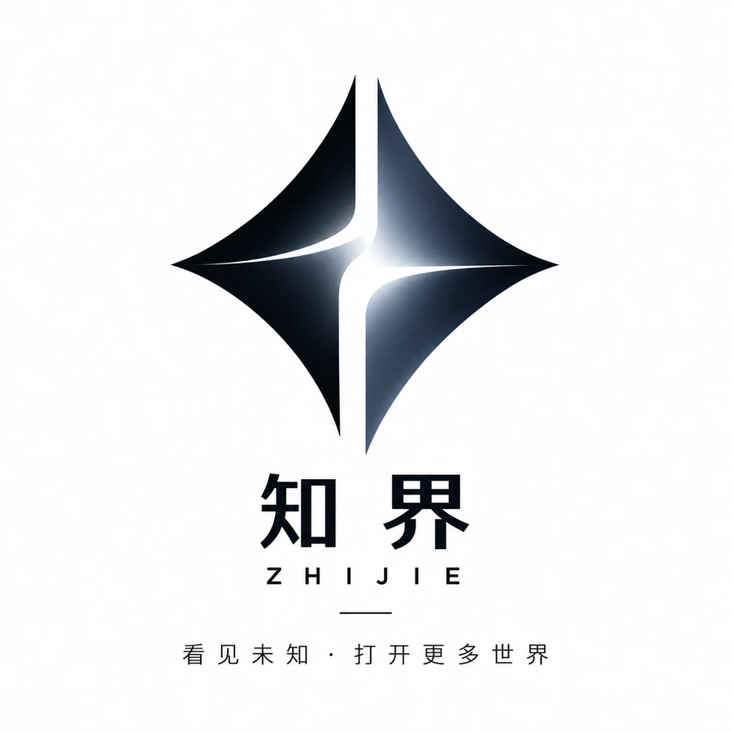

01
✦
AI 自动化应用
知识整理、内容处理、信息提取与智能辅助流程，让 AI 成为可持续使用的工作能力。
- 文本与资料智能处理
- 内部知识辅助
- 流程节点 AI 化

知界ZHIJIE STUDIOZHIJIE INFORMATION TECHNOLOGY STUDIO
面向个体经营者与小团队，提供 AI 自动化、办公流程优化、数据处理与轻量工具开发。把重复交给系统，把时间留给判断与增长。
WHAT WE DO
从真实业务问题出发，选择适合的技术路径。每一个项目先明确目标、边界与交付标准，再进入实施。
知识整理、内容处理、信息提取与智能辅助流程，让 AI 成为可持续使用的工作能力。
连接表格、文档、消息与日常操作，减少机械复制、重复录入和遗漏。
清洗杂乱数据、统一格式、批量转换，并输出清楚、可继续使用的结果。
围绕具体工作卡点开发专用脚本、桌面工具或网页小应用。
SOLUTION CATALOG
按常见业务场景拆分服务内容。点击分类查看适合谁、具体交付什么，以及通常需要多长时间。
适合每天反复整理文件、表格、文档或复制信息的个人与团队，把固定规则变成一键执行流程。
SERVICE CATALOG
以下是常见合作方向。每项都明确需要你提供什么、工作室交付什么，以及哪些情况需要先评估，避免只讲概念、不讲结果。
适合多表合并、去重核对、格式统一、分类汇总及固定报表生成。
批量改名、自动分类、格式转换、内容提取，以及根据模板生成文档。
整理销售、客户或业务数据，建立可复用的指标、图表与查询界面。
在明确规则下完成信息提取、分类、摘要、结构化输出及人工确认。
制作内部信息录入、查询、状态管理、客户需求收集等轻量网页系统。
围绕一个具体工作卡点，制作 Windows 工具、网页工具或流程连接程序。
不承接未经授权的数据获取、账号绕过、平台风控规避等需求；涉及第三方平台时，以其公开接口、授权条件和当前规则为准。
CAPABILITY SCENARIOS
以下为工作室实际制作或搭建的功能界面截图；其中业务数据为演示数据，用于说明功能与应用方向。
将重命名、格式转换、内容提取和文件整理集中到清晰流程中，减少大量重复操作。
把多门店销售数据清洗、汇总并可视化，帮助快速查看趋势、品类结构和关键洞察。
自动获取、清洗和整理客户资料，生成标准化文件，并将处理结果按流程推送到指定渠道。
SERVICE PLANS
价格是常见需求的起步参考。正式合作前先确认目标、范围、周期和验收方式，不以未沟通的页面价格直接承诺复杂项目。
¥300 起
适合目标清楚的单一处理需求或小型脚本。
¥800 起
适合完整的办公自动化、数据处理或小工具需求。
¥1500 起
适合多环节、需集成或希望长期演进的项目。
最终报价以确认后的需求范围为准；如需求不适合实施，会在合作前如实说明。
DELIVERY ASSURANCE
开始前明确功能、输入资料、交付形式、周期、修改次数和验收方法。
复杂项目先交付核心版本或阶段演示，确认方向后再继续推进。
优先使用脱敏样例；项目资料只用于约定服务，不在案例中擅自公开。
提交需求不等于付款；只有官方支付结果或人工核实后才会更新订单状态。
QUICK ESTIMATE
这是前期判断工具，不会替代正式报价。选择需求类型和复杂程度，页面会给出可参考的方案、周期与价格区间。
实际报价取决于数据量、接口条件、部署方式和修改范围。
DELIVERY PROCESS
采用分阶段推进，先把目标说清楚，再制作、测试和交付，降低双方对结果理解不一致的风险。
了解当前做法、输入资料、使用人员和期望结果，判断是否值得自动化。
输出：需求摘要明确功能边界、交付形式、周期、价格、修改范围和验收方法。
输出：确认方案按确认范围实现核心功能，提供阶段演示，及时校正关键细节。
输出：可用版本使用样例和实际场景测试，交付工具、使用说明与约定范围内的支持。
输出：正式交付FAQ
如果你的情况不在这里，直接通过微信发送一段现有流程说明即可。
可以。你只需要说明“现在怎么做、哪里最费时间、希望变成什么样”，技术方案由工作室评估并翻译成清楚的交付范围。
不是。起步价用于判断常见项目量级，最终价格会根据功能数量、数据量、接口条件、部署方式、交付周期和修改范围确认。
规则尚未稳定、输入资料长期不一致，或依赖没有开放接口的平台时，通常建议先梳理流程或做小范围验证，再决定是否完整开发。
会提供约定范围内的使用说明、测试样例或操作指导。需要长期维护、多人协作或持续更新的项目，可单独约定支持方式。
目前先提交需求并确认服务范围。支付宝与微信支付的官方商户接口接通后，客户可在对应平台完成付款；支付结果以平台服务端通知为准，本站不会自行收集银行卡信息。
ABOUT ZHIJIE
知界信息技术服务工作室专注于 AI 自动化、办公流程优化、数据处理与轻量工具开发。我们服务个体经营者、小团队与有明确效率需求的业务场景。
我们相信高质量的技术服务，不在于概念有多复杂，而在于它能否被理解、被使用，并在真实工作中持续创造价值。
START A PROJECT
告诉我们你现在怎样工作、哪一步最耗时间，以及希望达到什么结果。我们会先判断可行性，再确认服务范围和下一步。
微信扫码，添加工作室添加时请备注“官网咨询”
官网计划接入支付宝与微信支付的官方商户能力。支付成功必须由支付平台服务端确认；本站不会收集或保存银行卡资料，也不会把“提交需求”显示成“已经付款”。